In translation between languages that have different linguistic characteristics like Japanese and English, there are many cases in which contents are not correctly transmitted in the substitution from word to word. A method known to be effective as a measure for this is to determine the translations of verbs and nouns by using valency pattern pairs, which describe the semantic co-occurrences of verbs and nouns as valency patterns, and to pair them in the source language and the target language. However, this does not eliminate the problem of expressions regarded as ungrammatical (from the viewpoint of translation) being translated literally. In this research, we carried out analyses on expressions of compound Japanese nouns and verbs in correspondence with English words, by focusing on Japanese equivalent phrases to English words described in an English-Japanese dictionary. Consequently, there is hope that many cases of expressions created from one Japanese case element and verb corresponding to one English word can be obtained.
Japanese-English machine translation, Collocation expression, English-Japanese dictionary, Valency pattern
| 1 Introduction | |
| 2 Word composition of Japanese translation expressions to an English word | |
| 3 Classification of expressions containing nouns and verbs | |
| 4 Conclusion | |
| References |
In the semantic analysis of machine translation, there is a need to correctly understand the co-occurrence relationships of words. One approach known to be effective, especially in translation between languages that have different linguistic characteristics like Japanese and English, is the use of valency pattern pairs, which direct attention to the meaningful co-occurrences of nouns and verbs to form correspondences of the basic structures of expressions in the source language and the target language. In the collection of such pattern pairs, however, there are concerned with problems both the description accuracy and the collection method.
Concerning the former problem, it is known that if the semantic attributes of nouns used as case elements were to be classified according to about 2,000 (or more) types of resolution accuracies for Japanese-English machine translation, valency pattern pairs having properly translated Japanese verbs could be described, excluding idiomatic expressions or special expressions [1]. Concerning the latter problem, we could refer to examples in dictionaries for human readers or self-observations, but it would be necessary to eventually collect about 25,000 examples of Japanese-English valency patterns [2]1.
Basically speaking, there are limitations in improving the translation quality with a method making English expressions correspond to Japanese words, even if basic structures were changed from the viewpoint of valency. On the other hand, if there were many cases where the Japanese translation of an English word were equivalent to multiple clauses, or contrarily, if it were possible to effectively correspond an expression comprising multiple clauses of Japanese to one English word, it would be possible for natural English sentences to be obtained.
Accordingly, in this paper, we aim at the construction of a dictionary that matches multiple clauses of Japanese with an English word, and as a part of this, with an English-Japanese dictionary, we carry out analyses on expressions where an English word and multiple clauses of Japanese correspond. In particular, we aggressively investigate cases where a case element and a verb in Japanese correspond to one English word, with the aim of enriching valency pattern pairs.
In this work, we attempted analyses on Japanese translation expressions given by a key word in English, in an electronic English-Japanese dictionary (65,500 key words) [4]. Concretely speaking, we carried out morphological analyses on Japanese translations of English words, and then, we classified the part-of-speech sequences in those Japanese translations comprising multiple clauses and arranged the type and number of appearances. The total number of English-Japanese translation pairs recorded in the English-Japanese dictionary was 147,807 examples, and among them, 43,120 examples were analyzed as expressions of multiple clauses (Table 1).
| Number of Clauses | 1 | 2 | 3 | 4 | 5 | 6 | 7 | 8 |
| Number of Appearances | 104,687 | 31,225 | 8,594 | 2,267 | 665 | 226 | 79 | 35 |
| Number of Clauses | 9 | 10 | 11 | 12 | 13 | 14 | 15 | Sum Total |
| Number of Appearances | 13 | 8 | 2 | 2 | 1 | 1 | 2 | 147,807 |
In the classification of the part-of-speech sequences of the Japanese translation expressions, we decided to grasp a rough tendency first. For example, although the structures of word sequences differ from compound nouns and single nouns, it is easier to understand the tendency if we treat them equally in terms of whole nouns. Accordingly, when the same part-of-speech continued, it was collectively considered as one. However, we used the input declarations without modification, since features are lost when abstraction is done at the part-of-speech level with particles or auxiliary verbs. In the morphological analyses [5], supplementary expressions [in brackets] were excluded.
We sorted the obtained morphological analysis results and summed those part-of-speech sequences with a large number of appearances. Table 2 shows the summation results. The table shows a clause boundary with a "/".
| No. | J-POS Sequence | Freq. | Japanese Translation Example (E-POS, English Word) |
| 1 | / N--no / N / | 3,784 | (N, aboriginal), 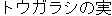 (N, capsicum) |
| 2 | / N--o / V / | 1,762 | 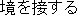 (I, abut),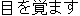 (I, wake) |
| 3 | / V / N / | 1,487 | 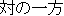 (N, doublet), (N, elevation) |
| 4 | / N--ni / V / | 1,184 | 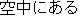 (A, aerial),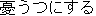 (T, depress) |
| 5 | / A / N / | 1,132 | 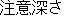 (N, carefulness),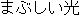 (N, glare) |
| 6 | / N--no / A / | 916 | (A, harmless), (A, lucky) |
| 7 | / N--na / N / | 864 | 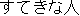 (N, peach),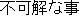 (N, riddle) |
| 8 | / F / V / | 706 | (I, peek), 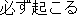 (A, certain) |
| 9 | / N--no / V / | 550 | (A, dignified), 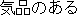 (A, graceful) |
| 10 | / N / V / N / | 486 | (N, embellishment), (N, globetrotter) |
| 11 | / V--te / V / | 402 | 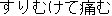 (I, chafe),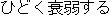 (I, emaciate) |
| 12 | / N--o / V / N / | 376 | (N, influence), 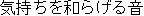 (N, lull) |
| 13 | / A / V / | 336 | 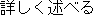 (T, enlarge),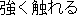 (T, hit) |
| 14 | / F / V--ta / | 308 | 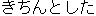 (A, methodical),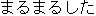 (A, plump) |
| 15 | / N / A / | 302 | (A, jealous), (F, satisfactorily) |
| 16 | / N--ni / V--ta / | 271 | 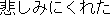 (A, disconsolate), (A, fair) |
| 17 | / V / A / | 244 | (T, cut), (A, ticklish) |
| 18 | / N--ga / V / | 231 | 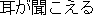 (I, hear),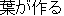 (A, leafy) |
| 19 | / N--no / N--na / | 217 | 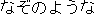 (A, dark),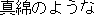 (A, flossy) |
| 20 | / V--ta / N / | 215 | (N, mess), (N, needle) |
| 21 | / N--o / V--ta / | 202 | 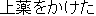 (A, glazed),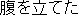 (A, ratty) |
|
| |||||||||||||||||||||
From Table 2, we can see a tendency of parts-of-speech with a large number of appearances. In the next section, we look at cases including nouns and verbs from which highly frequent results appeared. The possibility is high that expressions containing nouns and verbs can be case elements and verbs respectively, which can potentially be considered as new valency pattern pairs.
In this section, we take up the situation where nouns and verbs are included in the Japanese translations of English words. Considerations are made in the case where the case element modifies the verb and in the case where the verb modifies the noun. the former is a valency pattern itself, and the latter can be treated based on a valency pattern since it can generally reduce a modified noun to a case element.
Among these, we classified the results with large numbers of cases into seven categories as shown in Table 3, and each tendency was explored. Then, we selected the part-of-speech sequences consisting of one verb and one or more nouns. Below, Tables 4 to 10 show the top results of each classification.
| No. | Category (Examples of J-POS Sequences)2 | Number of Cases (selected) | ||
| 1 | Ending with a verb (e.g. /N-o/V/, /N-no/N-o/v/ ; /N/V/ ) |
16,250 | (8,018) | see Table 4 |
| 2 | Ending with a noun (e.g. /V/N/, /N-ni/V/N/ ; /N-no/N/ ) |
12,858 | (7,356) | see Table 5 |
| 3 | Ending with an adjective n(e.g. /V/N-ga/A/, /N-o/V/A/ ; /N-no/A/ ) |
2,472 | (263) | see Table 6 |
| 4 | Ending with an auxiliary verb "-ta(-da)" (e.g. /N-ni/V-ta/, /N-o/V-da ; /F/V-ta/ ) |
1,616 | (1,168) | see Table 7 |
| 5 | Ending with an auxiliary verb "-nai" (e.g. /N-o/V-nai/ ; /F/N-de-nai/ ) |
933 | (697) | see Table 8 |
| 6 | Ending with a particle "-te(-de)" (e.g. /N-o/V-te/, /N-ni/V-te/ ; /F/V-te/ ) |
576 | (476) | see Table 9 |
| 7 | Others (e.g. /V/N-no/, /N/V-zu-ni/ ; /N-no/N-na/ ) |
3,142 | (1,372) | see Table 10 |
| Total | 37,847 | (19,350) | ||
In table 4, the Japanese case element and verb correspond to one English word. In a narrow sense --although there is a difference that when the English word is a verb, the Japanese verb is an inflection, and when the English word is an adjective, the Japanese verb is attributive-- we believe that it is important to effectively grasp the relationship between the case element and verb in either case. Basically speaking, we want to describe them as a valency pattern pair. According to a trial describing case elements and verbs with 100 samples, we found that about half of them could be described as valency patterns. We estimated that we could get 4,000 new valency patterns.
| No. | J-POS Sequence | Freq. | Japanese Translation Example (E-POS, English Word) |
| 1 | / N--o / V / | 1,762 | (I, abut), (I, wake) |
| 2 | / N--ni / V / | 1,184 | (A, aerial), (T, depress) |
| 3 | / N--no / V / | 550 | (A, dignified), (A, graceful) |
| 4 | / N--ga / V / | 231 | (I, hear), (A, leafy) |
| 5 | / N / V--te / V / | 190 | 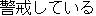 (A, leery),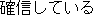 (A, positive) |
| 6 | / N--de / V / | 176 | 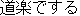 (A, amateur),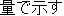 (T, quantify) |
| 7 | / N--o / N / V / | 153 | 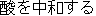 (A, antacid),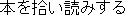 (I, browse) |
| 8 | / N--ni / N / V / | 129 | 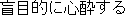 (A, idolatrous),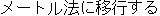 (I, metricize) |
| 9 | / N--to / V / | 128 | (I, mew), 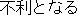 (A, prejudicial) |
| 10 | / N--no / N--o / V / | 119 | (T, backbite), 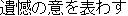 (A, regretful) |
| 11 | / N--o / V--te / V / | 99 | 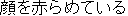 (A, blushing), (T, drag) |
| 12 | / N--ni / V--te / V / | 82 | 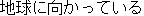 (A, earthbound),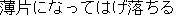 (I, flake) |
| 13 | / F / N / V / | 74 | 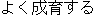 (I, flourish),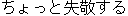 (T, pilfer) |
| 14 | / V / N--o / V / | 65 | (I, burgle), 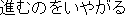 (A, restive) |
| 15 | / N--na / N--o / V / | 64 | 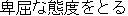 (I, crawl),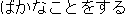 (I, footle) |
| 16 | / N--no / N--ni / V / | 60 | (A, go-ahead), 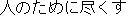 (I, oblige) |
| 17 | / N--ni / N--o / V / | 60 | 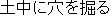 (I, burrow),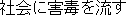 (A, pestilent) |
| 18 | / F / N--o / V / | 55 | 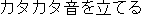 (I, clatter), (I, double) |
In table 5, many of the results seem to have problems in the translations of the English-Japanese dictionary from the viewpoint of Japanese-English translation. At a glance, the translations are explanation-like, and this is because many of the expressions do not appear in typical Japanese sentences. Consequently, these words would have little effect even if they were to be registered in a dictionary for Japanese-English translation. If they were registered, measures such as substitution to an expression likely to actually be used would be required.
| No. | J-POS Sequence | Freq. | Japanese Translation Example (E-POS, English Word) |
| 1 | / V / N / | 1,487 | (N, doublet), (N, elevation) |
| 2 | / N / V / N / | 486 | (N, embellishment), (N, globetrotter) |
| 3 | / N--o / V / N / | 376 | (N, influence), (N, lull) |
| 4 | / V--ta / N / | 215 | (N, mess), (N, needle) |
| 5 | / N--ni / V / N / | 175 | 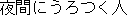 (N, nightwalker), (N, reliance) |
| 6 | / F / V / N / | 142 | (N, appanage), 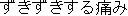 (N, smart) |
| 7 | / N / V--ta / N / | 140 | (N, inconsistency), (N, renovation) |
| 8 | / N--no / V / N / | 116 | (N, bowshot), (N, vine) |
| 9 | / N--ni / V--ta / N / | 56 | (N, improvisation), (N, pearl) |
| 10 | / V / A / N / | 54 | (N, inconstancy), (N, pushover) |
| 11 | / N--to / V / N / | 52 | (N, credit), (N, soul) |
| 12 | / V--no / N / | 52 | (N, interpolation), (N, remainder) |
| 13 | / V--te / V / N / | 52 | (N, acquaintance), (N, hearing) |
| 14 | / F / V--ta / N / | 51 | (N, easiness), (A, superior) |
In Table 6, the English part-of-speech is, on the surface, an adjective and an adverb, and the corresponding Japanese expression is attributive and continuous (particularly adverbial). When a modality has been added to an expression comprising a case element and verb, although we want to register a type where the adjective at the end is attributive in our valency pattern pair dictionary, with the present framework of pattern pairs, it is difficult to describe expressions accompanied by a subordinate clause. Future work will investigate correspondences to these.
| No. | J-POS Sequence | Freq. | Japanese Translation Example (E-POS, English Word) |
| 1 | / N / V / A / | 45 | (A, handy), (A, nameless) |
| 2 | / V / N--no / A / | 44 | (A, insatiable), (A, only) |
| 3 | / V / N / A / | 15 | (F, cutely), (F, unfailingly) |
| 4 | / N / V--no / A / | 10 | (A, beefy), (A, fresh) |
In Table 7, the English part-of-speech is an adjective in general, and the japanese verb is attributive. Like in Table 4, the Japanese case element and verb correspond to one English word. Basically speaking, we also want to describe them as a valency pattern pair. We estimated that we could get 600 new valency patterns.
| No. | J-POS Sequence | Freq. | Japanese Translation Example (E-POS, English Word) |
| 1 | / N--ni / V--ta / | 271 | (A, disconsolate), (A, fair) |
| 2 | / N--o / V--ta / | 202 | (A, glazed), (A, ratty) |
| 3 | / N--no / V--ta / | 126 | (A, soapy), (A, veined) |
| 4 | / N--de / V--ta / | 57 | (A, figured), (A, naive) |
| 5 | / N--to / V--ta / | 39 | (A, sonorous), (A, emphatic) |
| 6 | / N--ga / V--ta / | 39 | (A, melodramatic), (A, ready) |
| 7 | / N--ni / V--da / | 28 | (A, inventive), (A, salty) |
| 8 | / N--ni / N / V--ta / | 19 | (A, full-grown), (A, opinionated) |
| 9 | / F / N / V--ta / | 17 | (A, semiformal), (A, firm) |
| 10 | / N--no / N--o / V--ta / | 16 | (A, incarnate), (A, multilateral) |
| 11 | / N--o / V--da / | 15 | (A, auriferous), (A, furtive) |
| 12 | / N--no / N--ni / V--ta / | 13 | (A, methodical), (A, posthumous) |
| 13 | / N--no / N / V--ta / | 12 | (A, muscular), (A, war) |
| 14 | / N-kara / V--ta / | 12 | (A, biblical), (A, historical) |
| 15 | / A / N / V--ta/ | 11 | (A, agelong), (A, crisp) |
| 16 | / N--no / F / V--ta / | 10 | (A, clear-cut), (A, wellgroomed) |
In Table 8, similar to table 7, the English part-of-speech is an adverb, and the Japanese auxiliary verb "-nai" comes to have the form of a clause. Like in Tables 4 and 6, the Japanese case element and verb correspond to one English word. Basically speaking, we also want to describe them as a valency pattern pair. We estimated that we could get 400 new valency patterns.
| No. | J-POS Sequence | Freq. | Japanese Translation Example (E-POS, English Word) |
| 1 | / N--o / V--nai / | 109 | (A, confiding), (A, free) |
| 2 | / N--no / V--nai / | 99 | (A, impossible), (A, reluctant) |
| 3 | / N--ni / V--nai / | 85 | (T, sink), (A, unnoticed) |
| 4 | / N / V--te / V--nai / | 46 | (A, inactive), (A, unskilled) |
| 5 | / N--ga / V--nai / | 26 | (A, dumb), (A, sightless) |
| 6 | / V / N--no / V--nai / | 16 | (A, irrepressible), (A, needful) |
| 7 | / N--o / V--te / V--nai / | 13 | (A, bareheaded), (A, untried) |
| 8 | / N--ni / N / V--nai / | 12 | (A, sluggish), (A, maladjusted) |
| 9 | / N--mo / V--nai / | 10 | (A, dumb), (A, inconceivable) |
In Table 9, the English part-of-speech is an adverb, and the Japanese expression comes to have the form of a clause. The description of such an expression is difficult since the description of a valency pattern pair is considered to be at the simple sentence level. For example, another framework (like [6]) might be required.
| No. | J-POS Sequence | Freq. | Japanese Translation Example (E-POS, English Word) |
| 1 | / N--o / V--te / | 156 | (F, mischievously), (F, purposefully) |
| 2 | / N--ni / V--te / | 136 | (F, absorbedly), (F, seaward) |
| 3 | / N--ga / V--te / | 27 | (A, alight), (F, dementedly) |
| 4 | / N--no / N--o / V--te / | 10 | (F, enterprisingly), (F, expensively) |
If we look at Table 10, it seems that there are a lot of cases capable of applying the views explained in Tables 4 to 9. Nos. 2, 4, 9, 10, and 15 are similar to the results ending with an auxiliary verb "-ta (-da)" in Table 7. However, because individually there are also complex word constructions and they are quite unnatural as Japanese expressions, future work will also investigate the handling of these.
| No. | J-POS Sequence | Freq. | Japanese Translation Example (E-POS, English Word) |
| 1 | / V / N--ni / | 94 | (F, gluttonously), (F, passim) |
| 2 | / V / N--na / | 93 | (A, incredulous), (A, splitting) |
| 3 | / V / N--no / | 79 | (A, dirty), (A, would-be) |
| 4 | / N--o / V / N--na / | 32 | (A, cutting), (A, shrill) |
| 5 | / V / N--de--aru / | 32 | (I, prickle), (I, threaten) |
| 6 | / N--ni / V--ba / | 28 | (F, appropriately), (F, candidly) |
| 7 | / N / V / N--ni / | 26 | (F, bewitchingly), (F, pervasively) |
| 8 | / N / V / N--no / | 24 | (A, backward), (A, reformatory) |
| 9 | / F / V / N--na / | 21 | (A, creepy), (A, momentary) |
| 10 | / N / V / N--na / | 16 | (A, adorable), (A, provoking) |
| 11 | / V / N--de / | 15 | (F, deceitfully), (F, over) |
| 12 | / V--ta / N--ni / | 14 | (F, absurdly), (F, inquiringly) |
| 13 | / N--o / V--nai--de / | 11 | (F, malapropos), (F, rent-free) |
| 14 | / N--o / V / N--ni / | 10 | (F, suspiciously), (F, threateningly) |
| 15 | / N--no / V / N--na / | 10 | (A, oppressive), (A, spooky) |
| 16 | / N--ni--mo / V--zu / | 10 | (F, notwithstanding), (F, still) |
| 17 | / V--ta / N--no / | 10 | (A, unopened), (A, blue-black) |
By morphologically analyzing Japanese translations of an English-Japanese dictionary, we observed whole tendencies. When Japanese expressions corresponding to an English word were constructed from multiple clauses, we found quite a number of expressions that included a case element and verb. By processing these, we can expect the generation of valency patterns. According to the described trial, we will get 5,000 new valency patterns. In addition, by applying morphological analyse, we can automatically eliminate explanatory translations to some degree.
In the future, we plan to proceed with investigations on these and investigate methods of semi-automatically obtaining effective valency pattern pairs in Japanese-English translation from an English-Japanese dictionary.